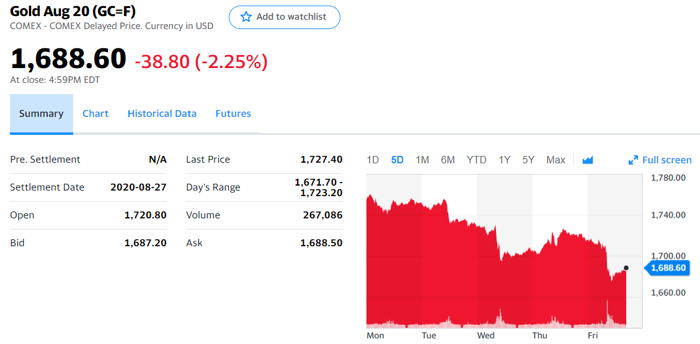
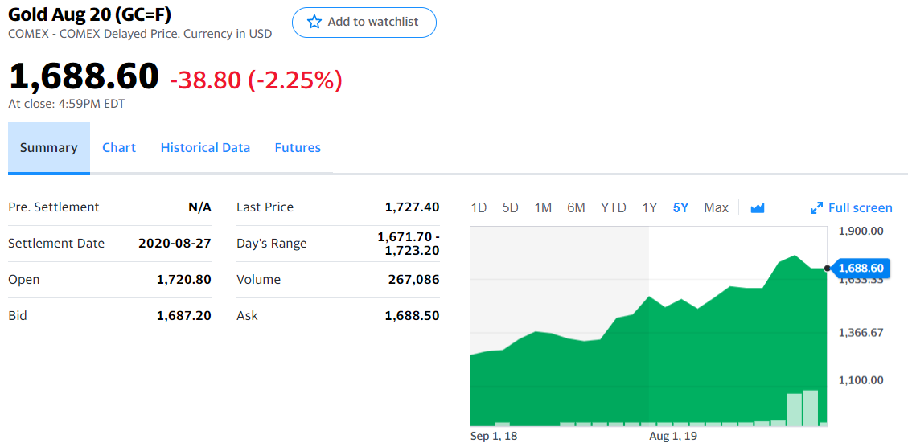
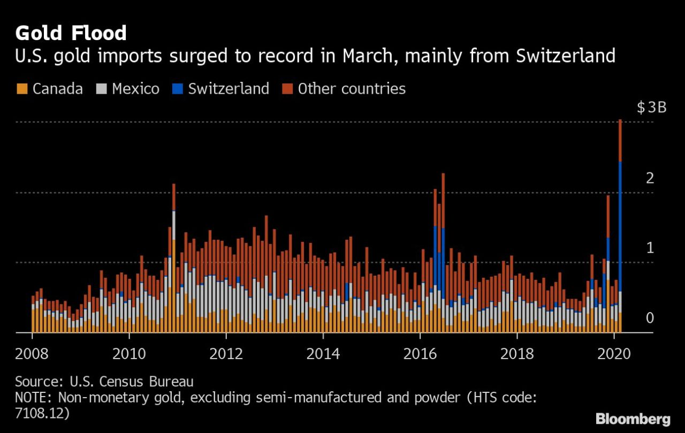
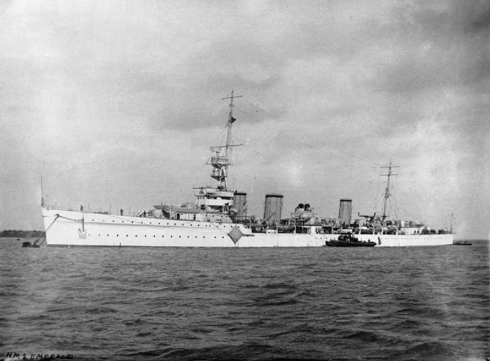
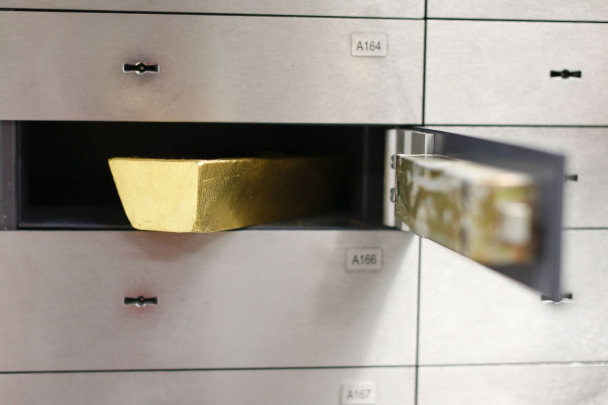

골드바 이야기 - 1940년 영국 경순양함 에머랄드 호와 2020년 뉴욕 상품거래소
게시: 2020-06-08T06:30:49+09:00
저는 소위 말하는 골드버그(gold bug), 즉 금성애자입니다. 전에 어떤 정권에서였는지 장관 후보자가 과거에 부동산 투기했던 것이 드러나서 청문회에서 추궁을 당하자, '부동산을 너무 사랑해서 샀을 뿐 투기는 아니다' 라고 말씀하셔서 화제가 된 적이 있었지요. 저는 투기 목적도 당연히 있지만, 저야말로 그냥 금이 너무 좋아서 금을 삽니다. 이 글은 6/6 토요일에 미리 짜집기하고 있는 것이지만, 간밤에 뉴욕 상품거래소에서 금값이 2.25% 폭락하여 "내가 하는 투자가 다 그렇지"라고 자포자기하게 만들었습니다. 이 글이 나올 6/8 월요일에는 또 얼마나 더 폭락했을지 모르겠군요.

(제게는 무척 슬픈 날입니다.)

(그러나 너무 고소해하지는 말아주세요. 혹시 압니까, 제가 1100불에 샀을지. 제가 언제 샀는지는 비~밀.)
저는 금 관련 뉴스를 자주 읽는 편인데, 최근 블룸버그에 흥미로운 기사가 실렸습니다.
https://finance.yahoo.com/news/virus-sparked-round-clock-rush-122153643.html
한줄 요약하면 이렇습니다.
"3월부터 지금까지 약 3달간, 전례 없이 많은 양인 550톤의 금이 전세계에서 뉴욕으로 보내졌다."
이 550톤이라는 양은 금괴왕이 청와대 지하금고에 보관하고 있다는 200톤 금괴의 2.75배에 해당하는 양이자, 최근 3달간 지구에서 생산된 금 전체에 해당하는 양입니다. 왜 갑자기 이런 일이 벌어졌을까요 ? 과거에 중국은 온 세계가 자신에게 조공을 바친다고 생각했습니다만, 미국은 정말 '천조국'이라서 이 위기의 시절에 전세계의 금을 진공청소기로 빨아들였던 것일까요 ?

(2008년부터 지금까지의 미국으로 들어온 금의 양과 수출국입니다. 최근 특히 스위스로부터 엄청난 양의 금이 미국으로 보내진 것을 보실 수 있습니다. 참고로 스위스는 금이 단 한 톨도 나지 않는 나리입니다.)
이렇게 뉴욕이 자석처럼 금을 빨아들인 이유는 (사실 금은 자석에 붙지 않습니다) 알고보면 간단합니다. 물론 코로나-19와 상관 있습니다. 일단, 유럽에서 가장 큰 금 정련소는 스위스에 있는데, 이탈리아와 인접한 스위스도 초기에 코로나-19의 직격탄을 맞았습니다. 그 때문에 금 정련소가 조업을 중단했고, 그래서 뉴욕 상품거래소로의 공급에 차질이 생겼습니다. 그리고 더 중요한 전개가 있었습니다. 코로나-19 때문에 세계 각국이 서로에게 입국 금지를 먹이면서 유럽과 미국 사이를 오가던 항공편도 급격히 줄어들었습니다. 과거 제2차 세계대전 때에도 영국이 혹시 영국이 독일에게 점령당할 때에 대비하여 영란은행의 금괴를 영국 해군 순양함에 실어서 미국으로 보냈다고 하지요. 요즘은 유럽에서 미국으로 금괴를 수송할 때 그냥 승객들 타는 민항기의 화물칸에 실어보냅니다. 그런데 항공편이 급격히 매우 심하게 줄어들면서 금괴 수송에도 차질이 생긴 것입니다.

(1940년 6월, 영국 해군 경순양함 HMS Emerald는 당시 가치로 무려 5천8백만 파운드에 해당하는 금괴를 캐나다 할리팩스로 실어날랐고, 이와 함께 싣고 간 영국 정부의 유가증권은 뉴욕 증권거래소에서 판매되어 미국으로부터의 무기와 보급품 대금으로 미국에게 지불되었습니다. Operation Fish라는 작전명으로 이런 금괴 수송이 몇차례 수행되었습니다. 저 경순양함 HMS Emerald에 실린 금괴의 양이 얼마인지 궁금해서 찾아봤는데, 아무리 찾아봐도 금액이 5천8백만 파운드라는 것만 나오고 무게는 안 나오더군요. 그러나 열심히 검색해보니, 1940년 당시 금 1 트로이 온스(troy ounce)의 가격은 33.85 달러였고, 1940년 3월부터 영국 파운드화는 미국 달러에 1파운드 = 3.99 달러로 고정되어 있었습니다. 그에 따라 계산해보면 HMS Emerald에 실렸던 금괴는 6,836,632 트로이 온스이고 톤으로 따지면 212.6 톤입니다. 금괴왕이 청와대 지하 금고에 보관하고 있다는 금괴보다도 많네요 ! )
원래 선물거래 상품거래 하시는 분들이 진짜 머리가 좋은 분들이라고 하지요. 위의 두가지 상황, 즉 스위스 금 정련소의 조업 중단과 항공편 감소의 조합은 이 분들에게 돈벌이 기회가 되었습니다. 뉴욕 상품거래소에서 거래되는 것은 사실 금 선물(futures)입니다. 제가 위에 캡춰해놓은 금 가격도 자세히 보면 Gold Aug 20 (GC=F) 라고 씌여있고, 이는 8월 20일에 선적될 금의 선물을 미리 사놓는 것입니다. 그런데 지금 사놓은 금 선물도 결국 8월 20일에는 금 현물로 받아야 하는데, 그러자면 선물을 판매한 측이 그 때까지 실제로 어디선가 금을 뉴욕에 가져와야 하는 것입니다. 그런데 코로나-19 때문에 그게 어려워질 가능성이 높아졌습니다. 즉 리스크가 생긴 것이지요.
금융거래에서는 모든 리스크는 돈으로 평가됩니다. 원래 금이란 상품은 전세계 어디서나 동일한 가격으로 사고 팔리는 것이 원칙이고 그래서 런던 거래소와 뉴욕 거래소의 금값은 대개 동일했습니다만, 제때에 금 현물 선적을 못할 수도 있다는 코로나-19 리스크 때문에 런던에서의 금 가격보다 뉴욕에서의 금 선물 가격이 온스당 70불까지 비싸진 것입니다. 이건 거의 4% 정도에 달하는 상당한 수익입니다. 머리 좋은 사람들이 그런 기회를 놓칠 리가 없지요. 선물 거래자들은 런던이든 취리히든 요하네스버그든 세계 곳곳에서 금 현물을 현지 가격으로 사들인 뒤에, 뉴욕 거래소에서 금 선물을 팔고, 그 선물 만기일에 맞춰 재주껏 뉴욕으로 금을 선적해서 그 짜릿한 4% 수익을 현실화한 것입니다. 그런 이유 때문에 전세계에서 골드 바가 뉴욕으로 모여든 것입니다. 저처럼 금을 사놓고 금값이 오르기를 기도하는 사람은 하수이고, 고수들은 이미 이익을 볼 수 밖에 없는 상황을 만들어 두고 금을 거래하는 것이더군요.
어떻게 보면 정말 땅 짚고 헤엄치는 것 같지만, 사실 그때 금 현물을 실어나를 항공편을 못 구한다든가 그 사이에 금값이 폭등하든가 여러가지 위험이 있는 거래입니다. 4%의 이익을 보기 위해서 100%의 자본, 그러니까 수익의 25배에 달하는 밑천을 조달할 수 있어야 할 수 있는 장사이지요. 저 위에서 언급한 영국 해군 순양함 에머랄드 호가 독일군 잠수함에게 격침되어 대서양 바닥에 가라앉을 위험이 있었던 것처럼, 어렵게 구한 항공기가 호주에서 금을 싣고 뉴욕으로 오다가 뭔가 잘못되어 추락할 위험에 대비하여 보험에도 들어놓아야 하고 도난에 대비해서 믿을 만한 금고도 준비해야 하는 등 실무적인 측면에서는 훨씬 복잡하지요. 실제로 에머랄드 호가 금괴 212톤을 싣고 대서양을 건널 때, 하필 보기 드문 폭풍을 만나서 폭뢰와 보트는 물론 함재 수상기까지 상실했다고 하니, 당시 함장은 얼마나 조마조마했겠습니까 ?

(여러분~ 다들 주거래 은행 대여금고에 저런 골드바 하나씩은 가지고 계시지요 ~ ? 은행 대여금고 속에 든 물건은 그 은행 관계자들도 뭐가 들어있는지 모릅니다. 뜻하는 바는 그 금고가 강도에게 털려도 변상해줄 사람이 아무도 없다는 뜻입니다.)
이렇게 세상은 넓고 돈 벌 방법은 무궁무진한데, 저는 재테크 쪽으로는 손대는 것 족족 손해만 보고 있어서 안타깝습니다 ㅋ
Source : https://www.fxcm.com/markets/insights/how-world-events-impact-the-british-pound-gbp/
https://finance.yahoo.com/quote/GC=F?p=GC=F
http://piketty.pse.ens.fr/files/capital21c/xls/RawDataFiles/GoldPrices17922012.pdf
https://en.wikipedia.org/wiki/Operation_Fish